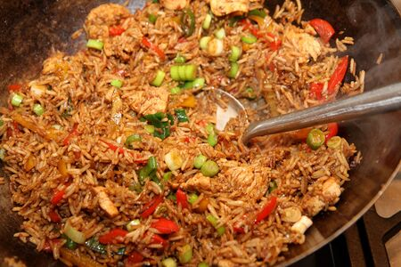

Chinese Style Rice
This is a simple recipe for Chinese style rice. The Chinese style rice is a delicious and easy-to-make dish that combines cooked rice with vegetables and eggs.

Ingredients
- 2 cups cooked rice
- 1/2 cup mixed vegetables (peas, carrots, corn)
- 2 eggs, beaten
- 2 tbsp soy sauce
- 1 tbsp vegetable oil
- Salt and pepper to taste
Instructions
- Heat the vegetable oil in a large pan or wok over medium heat.
- Add the mixed vegetables and sauté until they are tender.
- Push the vegetables to one side of the pan and pour the beaten eggs into the other side. Scramble the eggs until they are fully cooked.
- Add the cooked rice to the pan and mix everything together.
- Pour the soy sauce over the rice and stir well to combine.
- Season with salt and pepper to taste.
- Cook for an additional 2-3 minutes, stirring occasionally, until the rice is heated through.